The spreadsheet that catches your mistakes before they cost you.
Version 1.0.1 Circuitspecter Studio Copyright (c) 2026 Matthew Menchinton & Circuitspecter Studio
Contents
Welcome to Julretsu
Installing Julretsu
A tour of the window
Entering and editing data
Formulas
Formatting your sheet
Rows, columns, sorting and filtering
Working with several worksheets
Saving, opening and recovery
CSV and Excel files
The safety net
Charts, reports and PDF
Lua macros
The AI assistant (optional)
Views, themes and the workbook window
Keyboard shortcuts
Troubleshooting
Uninstalling Julretsu
License and contact
1. Welcome to Julretsu
Julretsu is a desktop spreadsheet for Windows, macOS and Linux. It works like the spreadsheets you already know: a grid of cells, formulas that recalculate as you type, formatting, sorting, charts and printing. Your workbooks stay on your own computer.
What makes Julretsu different is its safety net. Spreadsheet mistakes such as a mistyped amount, a total that skips a row or a paste that lands one row off cost businesses real money every year. Julretsu watches for these as you work, explains what looks wrong in plain language, offers one click fixes, and keeps a history of every change so you can always see who changed what and when.
What you can do with Julretsu
Build budgets, price lists, schedules and reports on sheets of up to 1,000,000 rows and 16,384 columns.
Use formulas such as SUM, AVERAGE and IF, and link one worksheet to another.
Format cells with fonts, colours, borders, currency, percentages and dates.
Open and save CSV files and Microsoft Excel .xlsx workbooks.
Turn a selection into a bar or line chart, export it as a report, print it, or save it as a PDF.
Automate repetitive edits with small Lua macros.
Optionally ask an AI model to propose edits, which you review before anything changes.
Tip. Julretsu opens with an example project budget. Every screenshot in this manual uses that example, so you can follow along.
2. Installing Julretsu
Download the installer for your computer from the Julretsu website. Julretsu 1.0.1 comes in these packages:
Computer
File
Requirements
Windows
Julretsu-1.0.1-Windows-Setup.exe
Windows 10 or 11 (64 bit), graphics that support OpenGL 3.3
Mac
Julretsu-1.0.1-macOS.dmg
macOS 13.3 Ventura or later, Apple silicon or Intel
Linux (Ubuntu, Debian, Mint)
Julretsu-1.0.1-linux-amd64.deb
64 bit Intel or AMD, a desktop with X11 or XWayland
Linux (any distribution)
Julretsu-1.0.1-linux-x86_64.tar.gz
Same as above; no installation needed
Windows
Double-click Julretsu-1.0.1-Windows-Setup.exe.
Read the license, tick I accept the Julretsu Software License, and click Next.
Choose where to install Julretsu. The suggested folder is inside your own user folder, so you do not need administrator permission.
Choose your options: a Start menu entry, a desktop shortcut, and whether Julretsu should open .julretsu workbooks when you double-click them.
Click Install. When it finishes, leave Start Julretsu now ticked and click Finish.
Step 2: the license agreementSteps 3 and 4: install options
If Windows shows "Windows protected your PC". This message appears for new programs that Windows has not seen many times yet. Click More info, check that the publisher and file name are what you expect, then click Run anyway.
Mac
Double-click Julretsu-1.0.1-macOS.dmg to open it.
Drag Julretsu onto the Applications folder shown in the same window.
Open your Applications folder and start Julretsu.
If macOS says it cannot check the app for malicious software. The first time, Control-click (or right-click) Julretsu in Applications and choose Open, then click Open again. You can also go to System Settings, Privacy & Security and click Open Anyway. You only need to do this once.
Linux
Ubuntu, Debian, Linux Mint and similar: double-click the .deb file to install it with your software centre, or run this command in the folder where you downloaded it:
sudo apt install ./Julretsu-1.0.1-linux-amd64.deb
Julretsu then appears in your applications menu, and .julretsu files open in Julretsu.
Other distributions: extract the .tar.gz file anywhere you like and run bin/julretsu inside the extracted folder.
Note. On Linux, Julretsu uses the desktop's own file dialogs. If you see a message asking for zenity or kdialog, install one of them, for example sudo apt install zenity.
3. A tour of the window
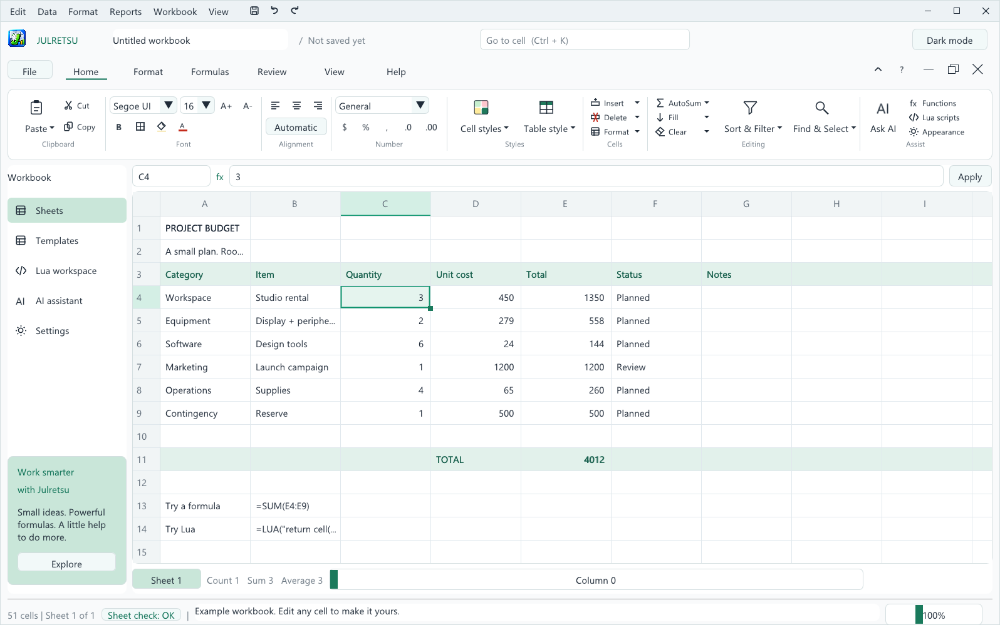
12345678910111213
The main window with the example budget
#
Part
What it does
1
Menus
Edit, Data, Format, Reports, Workbook and View menus with every command.
2
Quick access
Save, Undo and Redo, always one click away.
3
Window buttons
Minimize, maximize and close Julretsu. Drag any empty part of the top two rows to move the window.
4
Workbook name
The file you are working on and whether it has unsaved changes.
5
Go to cell
Type an address such as C4 and press Enter to jump there (Ctrl+K).
6
File and ribbon tabs
File opens the file menu. The tabs switch the ribbon: Home, Format, Formulas, Review, View and Help.
7
Workbook buttons
Collapse the ribbon, open help, and minimize, restore or close the workbook.
8
Ribbon
The most used commands for the selected tab, grouped like other office programs.
9
Formula bar
Shows the address and the exact contents of the selected cell. Edit here and press Enter or click Apply.
10
Navigation
Sheets, templates, the Lua workspace, the AI assistant and settings.
11
Grid
Your cells. The active cell has a green outline and a small fill handle in its corner.
12
Sheet button and totals
Switch worksheets. The count, sum and average of the selected cells appear beside it.
13
Status bar
Number of filled cells, the Sheet check badge, messages, and the zoom slider.
4. Entering and editing data
Selecting cells
Click a cell to select it. Use the arrow keys, Tab, Page Up and Page Down to move.
Shift+click another cell to select the rectangle between them.
Click a row number to select the whole row. Ctrl+click adds or removes rows, and Shift+click selects a run of rows.
Ctrl+Home jumps to A1. Edit, then Select used range selects everything that holds data.
Typing and changing values
Double-click a cell or press F2, or click in the formula bar.
Type a number, text, TRUE or FALSE, or a formula that starts with =.
Press Enter to keep the change, or Esc to cancel it.
Tip. To store text that starts with = or looks like a number, start it with an apostrophe. For example '=hello or '00123 are kept exactly as typed.
Long text stays inside its own cell and ends with "...". Hover over the cell, or look at the formula bar, to read all of it. A number that is too wide for its cell shows ### so it can never be misread; zoom in, or read it in the formula bar.
Undo and redo
Press Ctrl+Z to undo and Ctrl+Y to redo, or use the quick access buttons. A paste, a sort or a macro is undone in one step.
Copy, cut and paste
Ctrl+C copies, Ctrl+X cuts and Ctrl+V pastes. You can copy up to 10,000 cells at a time.
Ctrl+Shift+V pastes values only, without formulas or formatting.
Copying inside Julretsu keeps formulas and formatting. Relative references move with the paste, while references with $ stay fixed.
You can paste text copied from other programs, such as rows from a web page or another spreadsheet.
Filling a series
Drag the small square at the corner of your selection down or to the right. Formulas are copied with their references adjusted. If you start with two numbers, such as 5 and 10, Julretsu continues the series: 15, 20, 25 and so on. You can also use Home, Editing, Fill to fill down or right.
Finding things
Press Ctrl+F to search values and formulas on the current sheet. Click Find next to move through the matches.
5. Formulas
A formula starts with = and recalculates automatically whenever a cell it uses changes. For example, in the budget, cell E4 holds =C4*D4: quantity times unit cost.
Building blocks
You can use
Examples
Numbers, text in quotes, TRUE and FALSE
=42, ="Paid", =TRUE
Cell references and ranges
=B2, =SUM(B2:B9), =SUM(A1:C3)
Arithmetic
+ - * / and brackets, as in =(B2+B3)*1.2
Comparisons
= <> < <= > >=, as in =B2>100
Functions
Function
What it does
Example
SUM
Adds numbers. Text and empty cells are ignored.
=SUM(E4:E9)
AVERAGE
Average of the numbers in a range.
=AVERAGE(D4:D9)
IF
Chooses between two results. It always takes three parts: a test, the result when true, and the result when false.
=IF(E4>1000,"Review","OK")
SHEET
Reads a cell on another worksheet.
=SHEET("Budget","E11")
LUA
Runs a short Lua calculation.
=LUA("return cell('E11') * 1.05")
The quickest way to total a column is to select it and choose Home, Editing, AutoSum, Sum. Julretsu adds a SUM formula directly below your selection.
When a formula shows an error
Shows
Meaning
#DIV/0!
A division by zero, or an average of no numbers.
#VALUE!
Text was used where a number was needed.
#REF!
A reference points outside the sheet.
#NAME?
An unknown function name.
#CYCLE!
A formula depends on itself, directly or through other cells.
#NUM!
A result too large to represent.
#PARSE!
The formula could not be read. Check brackets and quotes.
Tip. Turn on View, Show formulas to see every formula in the grid instead of its result.
6. Formatting your sheet
The Home ribbon holds the everyday formatting tools. They apply to the selected cells. If you selected whole rows by clicking their row numbers, they format those rows instead.
Group
Tools
Clipboard
Paste (or paste values), Cut and Copy.
Font
Font, size, bigger and smaller text, bold, borders, fill colour and font colour.
Alignment
Left, centre, right, or Automatic (numbers right, text left).
Number
General, Number, Currency, Percentage, Date and Comma formats, plus fewer or more decimal places.
Styles
Ready made cell styles such as Good, Bad, Neutral, Title, Heading, Total, Input and Note, and table styles with a header row and banded rows.
Cells
Insert and delete rows, columns and worksheets, and open Format cells.
Editing
AutoSum, Fill, Clear, Sort & Filter, and Find & Select.
The Format cells dialog
For full control, choose Format, Format selected cells (or Cells, Format, Format cells). You can set the font family (sans serif, serif or monospace), size, bold, borders, alignment, number format, decimal places, and text and fill colours.
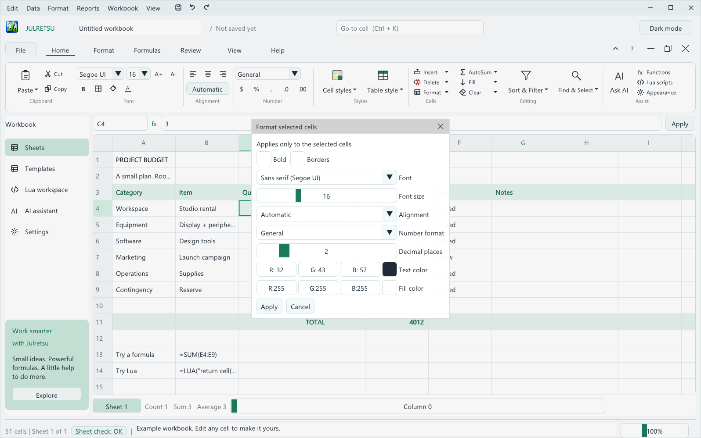
Format cells: every formatting option in one place
Number formats
Format
1234.5 appears as
General
1234.5
Number (2 decimals)
1234.50
Currency
$1,234.50
Comma
1,234.50
Percentage (0.25 with 0 decimals)
25%
Date
Excel style date serial numbers shown as a date, for example 2026-09-20
Formatting whole rows
The Format tab has quick tools for entire rows: bold rows, a green fill, fewer or more decimals, and reset. They are handy for header and total rows.
Formatting a table in one click
Select your table including its header row, then choose Home, Styles, Table style and a colour. Julretsu makes the header bold and coloured, adds borders, and shades every other row.
7. Rows, columns, sorting and filtering
Inserting and deleting
Select a cell, then use Home, Cells, Insert or Delete (also on the Data menu). Rows are inserted above the selected cell and columns before it. Formulas elsewhere are updated so they still point at the right cells.
Note. Julretsu will not delete a row or column that other formulas depend on, because that would silently break them. It also asks you to remove SHEET and LUA references before inserting or deleting, since those cannot be adjusted automatically.
Sorting
Select the rows to sort, including every column that belongs to them. Leave the header row out.
Click a cell in the column to sort by, so it becomes the active cell.
Choose Home, Editing, Sort & Filter, then Sort A to Z or Sort Z to A.
Safety net. If columns beside your selection hold data in the same rows, Julretsu warns you straight away, because sorting only part of a table mixes up rows. Choose Undo change and select the whole table.
Filtering
Click a cell in the column you want to filter, then choose Data, Filter active column. Type the text to look for. Only rows containing that text stay visible (capital letters must match), and row 1 always stays visible as your header. Choose Data, Clear filter to show everything again. Filtering never deletes data. To protect hidden rows, clear the filter before sorting, pasting or deleting.
Freezing headings
On the View menu choose Freeze first row, Freeze first column, or both, so your headings stay in view while you scroll.
8. Working with several worksheets
A workbook can hold up to 64 worksheets. Click the sheet button at the bottom left of the grid to switch sheets, or choose Workbook, Manage sheets to add, duplicate, rename, reorder or delete them.
To use a value from another sheet, use SHEET with the sheet name and cell address in quotes, for example =SHEET("Q1 Sales","B12"). If you rename a sheet, update the name inside your formulas as well.
Careful. Deleting a worksheet removes all of its contents and cannot be undone. Julretsu asks you to confirm first.
9. Saving, opening and recovery
Julretsu workbooks
Save with Ctrl+S, the quick access Save button, or File, Save. The first time, choose a folder and a name. Use File, Save As (Ctrl+Shift+S) to save a separate copy. Open workbooks with Ctrl+O, or double-click a .julretsu file.
A .julretsu file keeps everything: values, formulas, formatting, all worksheets, your Lua script and the change history. Julretsu always asks before closing or replacing a workbook with unsaved changes.
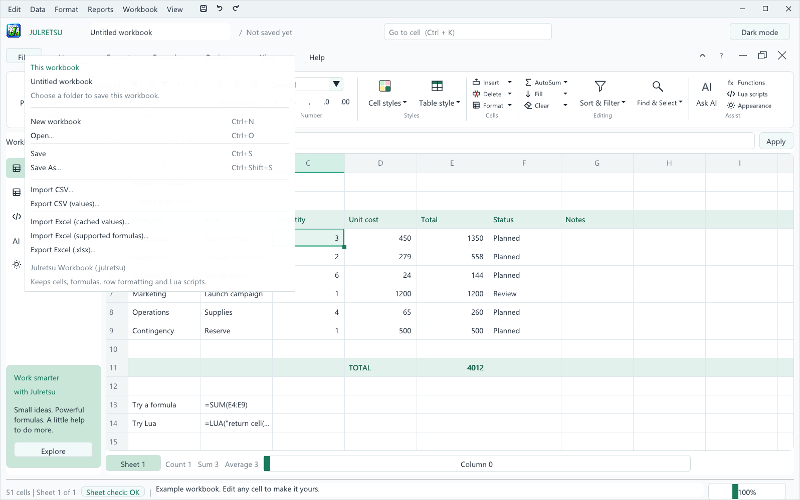
The File menu
Automatic recovery
After a minute of unsaved work, Julretsu quietly keeps a recovery copy and refreshes it every minute. If Julretsu or your computer closes unexpectedly, the next time you start Julretsu it offers to restore that copy. Choose Restore, then save the workbook with Save As. The recovery copy is removed whenever you save or close Julretsu normally. You can turn it off, or open it manually, from the Workbook menu.
10. CSV and Excel files
CSV files
Use File, Import CSV and File, Export CSV. Julretsu reads and writes UTF-8 CSV files, including values that contain commas, quotes or several lines. When importing, numbers and TRUE or FALSE are recognised and everything else becomes text. Formulas in a CSV file are never run.
Exported CSV files contain calculated values. Text that starts with =, +, - or @ is protected with a leading apostrophe, so another spreadsheet program will not run it as a formula.
Excel workbooks
File, Import Excel reads the first worksheet of an .xlsx file. Choose cached values to bring in the results Excel last calculated, or supported formulas to keep arithmetic, comparisons, SUM, AVERAGE and IF as live formulas. Before anything loads, Julretsu shows exactly what will and will not come across.
File, Export Excel saves the current worksheet as an .xlsx file with its supported formulas, bold text, colours and decimal row formats.
Note. Excel features such as merged cells, charts, column widths, comments and other worksheets are not imported or exported. Keep a .julretsu copy of your work for full fidelity.
11. The safety net
Julretsu looks out for the everyday mistakes behind costly spreadsheet errors. It never blocks you; it explains what looks wrong and lets you decide.
Review before keeping risky changes
After a large paste, fill, clear or macro, after deleting a row or column that held data, after a sort that left neighbouring columns behind, or when formulas are overwritten, Julretsu shows Review this change. The change is already visible in your sheet and the dialog lists every affected cell with its old and new value.
Keep change (Enter) accepts it.
Undo change (Esc) puts everything back exactly as it was.
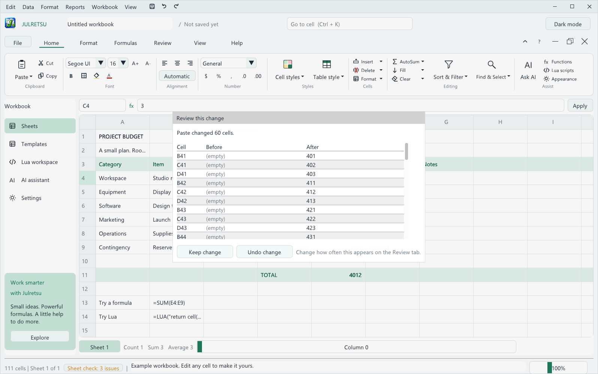
Review this change after a large paste
On the Review tab you can choose how many cells a change must touch before Julretsu asks, or turn reviews off. Partial sorts, deleted data, replaced formulas and out of scale numbers are always reviewed.
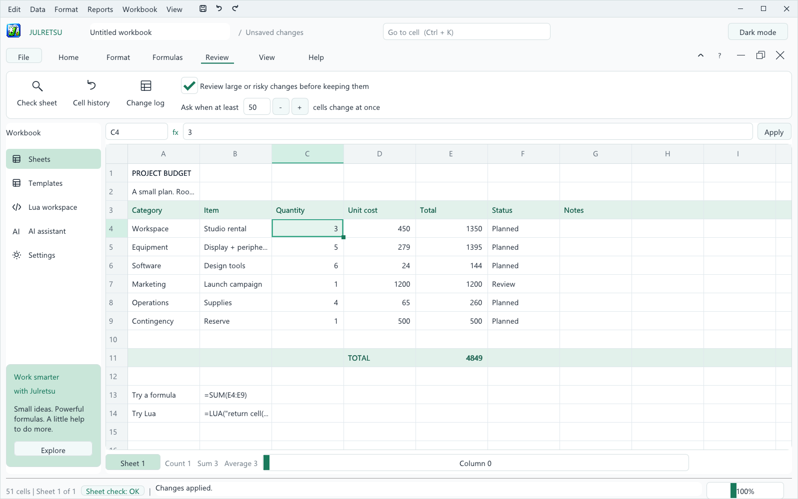
The Review tab
Instant typo check
If you type a number far larger or smaller than the rest of its column, for example 4500000 in a column of amounts around 450, the status bar warns you right away. Press Ctrl+Z if it was a slip.
Sheet check
The Sheet check badge in the status bar always shows whether your sheet has problems. Click it, or choose Review, Check sheet, to open the panel. Julretsu looks for:
a typed number, or a different formula, inside a column of matching formulas;
SUM or AVERAGE ranges that stop short of neighbouring numbers;
numbers wildly out of scale with the rest of their column;
numbers stored as text, which totals silently skip;
blank rows that split a table and break sorting and filtering.
Each problem has Go to, a one click fix when a safe fix exists, and Ignore. Red dots mark problems likely to give wrong results. Every fix can be undone.
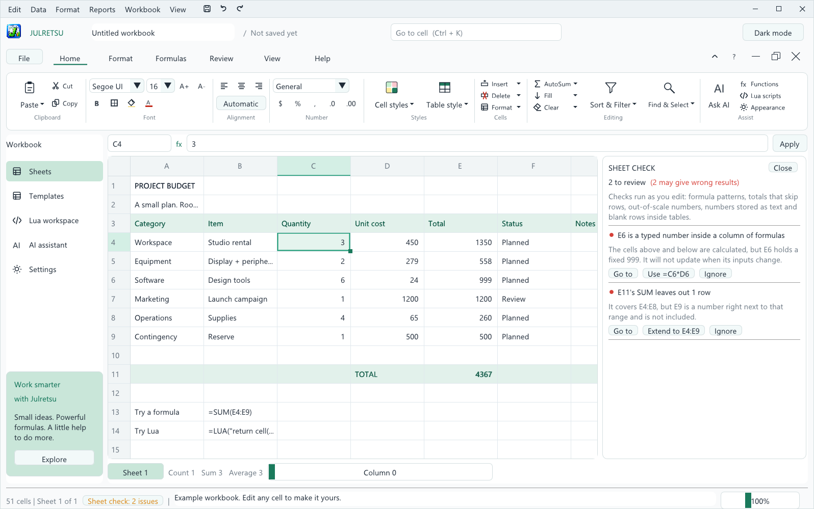
Sheet check found a typed value in the Total column and a total that skips a row
Cell history and the change log
Right-click a cell and choose Cell history, or use Review, Cell history, to see every change to that cell: when it happened, what caused it, and the value before and after. Review, Change log lists every change on the sheet.
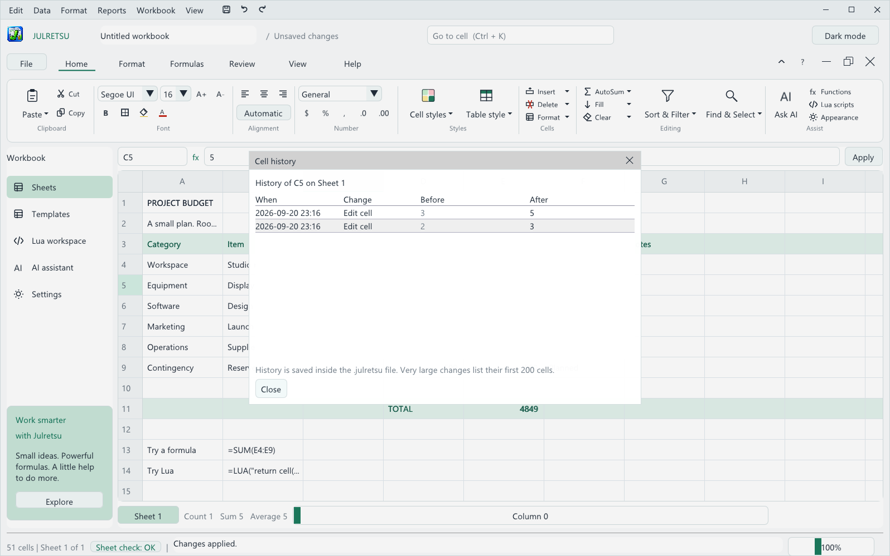
The history of a single cell
History is saved inside the .julretsu file, so it travels with the workbook. Julretsu keeps the latest 1,000 changes, and very large changes list their first 200 cells. If you share a file and prefer not to include its history, open the change log and choose Clear history.
12. Charts, reports and PDF
Select the cells you want in your report. If only one cell is selected, Julretsu uses every filled cell on the sheet.
Choose Reports, Chart / print selected range.
Give the report a title and pick the Chart column that holds the numbers to chart. Choose a bar or line chart, portrait or landscape, and whether to repeat the first row on every page.
Click Export chart + table (HTML) and choose where to save the file. Open it in any web browser to see the chart and table together, then use the browser's Print command to print it or save it as a PDF. This works on Windows, Mac and Linux.
On Windows you can also click Print / Save as PDF to print directly. To make a PDF, choose Microsoft Print to PDF as the printer.
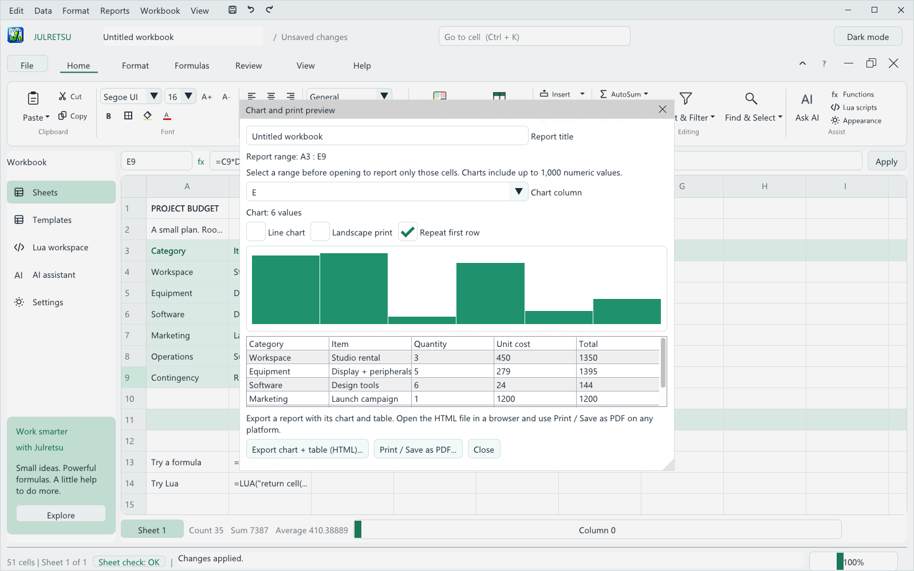
Chart and print preview
Note. A report can include up to 12 columns and 10,000 cells, and the chart uses up to 1,000 numbers from the chart column. A single number is shown as one bar so it stays visible. Reports are snapshots and are not saved in the workbook. The exported HTML file holds everything it needs, so you can email it or open it on another computer.
Sample templates
Click Templates in the navigation bar to open a ready-made workbook filled with fictional sample data and working formulas. Choose one from the Sample workbook list and click Use selected template. Julretsu offers to save your current workbook first.
Template
What it shows
Project budget
Planned and actual costs by category, with totals and the difference.
Monthly sales
Online and store sales for twelve months compared with a target. A good line chart.
Household expenses
Planned and actual spending by category, with the amount remaining.
Inventory planning
Stock on hand, reorder levels, unit costs and the value of each product.
Weekly project hours
Design, development and testing hours for twelve weeks, with weekly totals.
Templates are a quick way to try charts: open one, select its table and choose Reports, Chart / print selected range.
13. Lua macros
Lua macros automate repetitive edits. Open the Lua workspace from the navigation bar or Home, Assist, Lua scripts.
cell('A1') reads a cell as it was before the macro started.
set('A1', value) queues a change.
Click Run macro. All changes are applied together, and Undo macro reverts them in one step.
This example adds 1 to every quantity in the budget:
for row = 4, 9 do set('C' .. row, cell('C' .. row) + 1) end
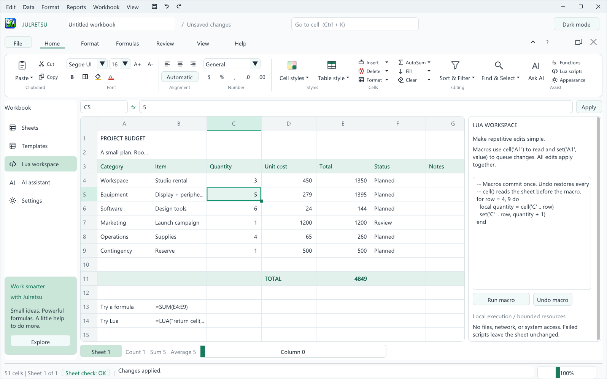
The Lua workspace
Note. Macros run in a safe sandbox with no access to your files, the network or the rest of your computer, and with limits on time and memory. A macro that fails leaves your sheet unchanged. The script is saved with the workbook but never runs by itself.
14. The AI assistant (optional)
Julretsu works fully offline. If you want, you can connect your own AI provider and ask for changes in plain language, such as "add a 10% contingency row under the total".
Open AI assistant from the navigation bar or Home, Assist, Ask AI.
Under Connection, choose Anthropic (Claude) or an OpenAI compatible server such as OpenAI, Ollama or LM Studio, enter the model name, and save your API key.
Describe the change and click Propose edits.
Review each proposed edit with its before and after values, untick anything you do not want, and click Apply.
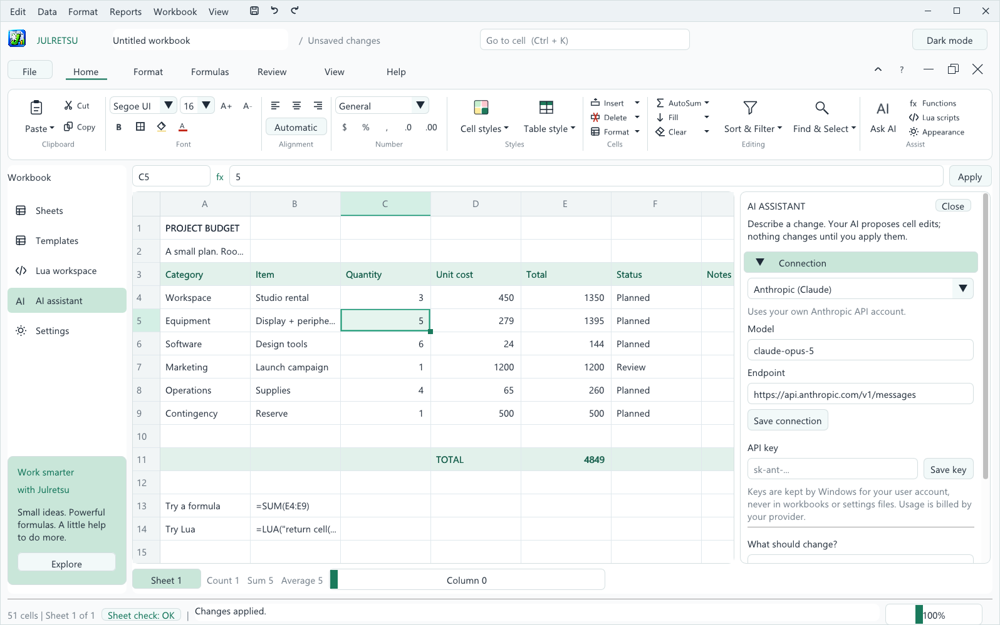
The AI assistant panel
Your API key is stored by Windows Credential Manager for your user account, never in workbooks or settings files.
The panel tells you how many cells will be sent and to which server before you send anything. At most 2,000 filled cells are sent.
Edits that contain Lua formulas start unticked. Nothing changes until you click Apply, and one Ctrl+Z undoes the whole proposal.
Usage is billed by your provider under your own account.
Note. AI connections are currently available in the Windows version of Julretsu.
15. Views, themes and the workbook window
Dark mode
Click Dark mode at the top right, or use View, Dark appearance. Julretsu remembers your choice.
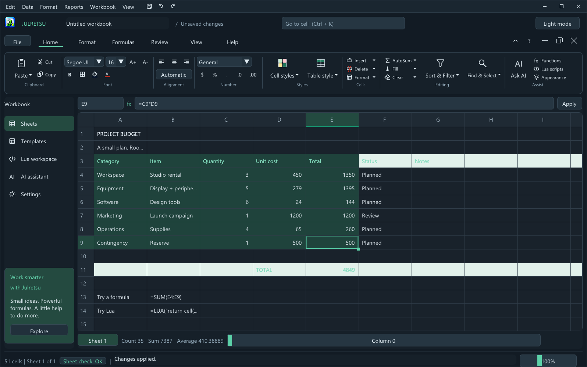
Julretsu in dark mode
Other view options
Zoom: drag the slider at the bottom right, from 75 to 150 percent.
Gridlines and Show formulas: on the View menu and the View tab.
Long text spills into empty cells: lets long text run across empty neighbouring cells, as older spreadsheets do.
Collapse the ribbon: click the arrow beside the ribbon tabs for more room. Click any tab to bring it back.
The workbook window buttons
The buttons at the right of the ribbon tabs control the workbook itself. Minimize shrinks it to a small bar at the bottom of the window, Restore places it in a window you can move and resize inside Julretsu, and Close closes it (you are asked to save first) and starts a blank workbook.
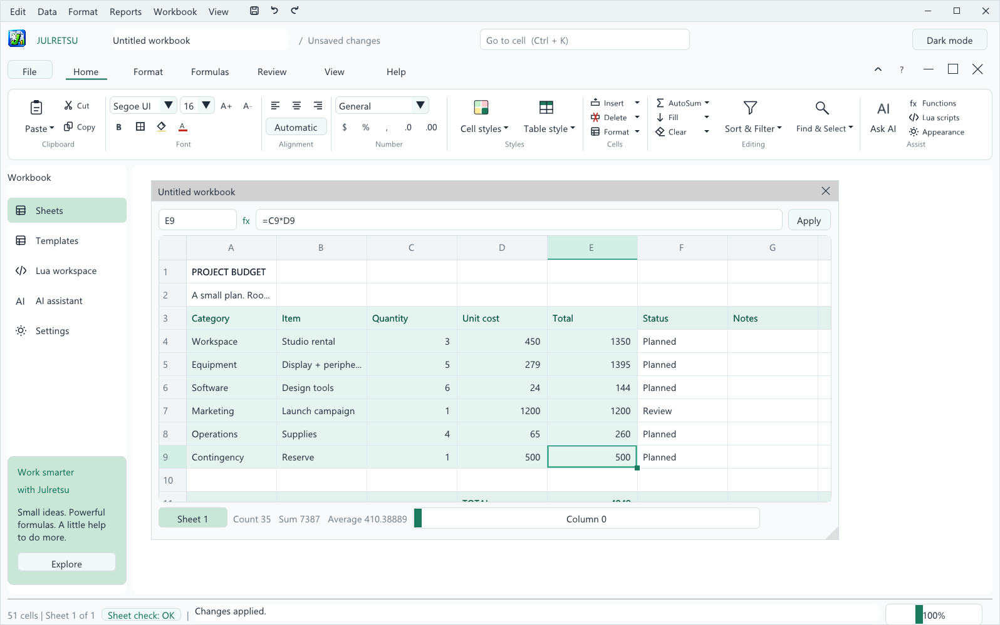
A restored workbook window inside Julretsu
16. Keyboard shortcuts
On a Mac, use Cmd wherever this table says Ctrl.
Action
Keys
New, open, save, save as
Ctrl+N, Ctrl+O, Ctrl+S, Ctrl+Shift+S
Undo, redo
Ctrl+Z, Ctrl+Y
Copy, cut, paste, paste values
Ctrl+C, Ctrl+X, Ctrl+V, Ctrl+Shift+V
Edit the selected cell
F2 or double-click
Keep or cancel an edit
Enter, Esc
Clear contents
Delete
Move the active cell
Arrow keys, Tab, Page Up, Page Down
First cell, last cell
Ctrl+Home, Ctrl+End
Go to a cell
Ctrl+K
Find
Ctrl+F
Select a range
Shift+click
Add or remove rows from a selection
Ctrl+click row numbers
Scroll rows, scroll columns
Mouse wheel, Shift+mouse wheel
Keep or undo a reviewed change
Enter, Esc
17. Troubleshooting
Problem
What to do
Windows says "Windows protected your PC" when installing.
Click More info, then Run anyway. See chapter 2.
macOS says it cannot check Julretsu for malicious software.
Control-click Julretsu in Applications and choose Open, or use Open Anyway in Privacy & Security.
Linux shows a message about zenity or kdialog.
Install one: sudo apt install zenity. Julretsu uses it for open and save dialogs.
Julretsu will not start and mentions OpenGL or graphics.
Update your graphics driver. Julretsu needs OpenGL 3.3 on Windows and Linux.
A cell shows ###.
The number is too wide for the cell. Zoom in, or read it in the formula bar.
A formula shows an error code.
See the error table in chapter 5, and check the Sheet check panel.
I cannot sort, paste or delete.
Clear any active filter first (Data, Clear filter).
Inserting a row is refused.
Remove SHEET or LUA references first; they cannot be adjusted automatically.
The recovery prompt appears when I start Julretsu.
Julretsu closed unexpectedly last time. Choose Restore to get your work back, or Keep current workbook to discard the copy.
Double-clicking a .julretsu file does not open Julretsu.
On Windows, run the installer again and tick Open .julretsu workbooks with Julretsu. On a Mac, open files with File, Open.
18. Uninstalling Julretsu
Windows: open Settings, Apps, Installed apps, find Julretsu, and choose Uninstall. You can also use Uninstall Julretsu in the install folder.
Mac: drag Julretsu from Applications to the Trash.
Linux (.deb): run sudo apt remove julretsu.
Linux (.tar.gz): delete the extracted folder.
Uninstalling never deletes your workbooks. Your appearance preference is stored in your user settings folder and can be deleted by hand if you wish.
19. License and contact
Julretsu is free to use under the Julretsu Software License. You may install and use it for personal, educational and business work, and the workbooks you create belong to you. Julretsu itself remains the property of Matthew Menchinton and Circuitspecter Studio. It is not open source, and you may not sell, redistribute or modify it. The full license is shown in the installer and included as the LICENSE file.
Julretsu includes third party components, each under its own license, listed in THIRD_PARTY_NOTICES.md: Dear ImGui, GLFW, Lua, sol2, stb, miniz and pugixml.
For questions or permission requests, contact the owner through github.com/Deathbringer98.
Julretsu 1.0.1 User Manual. Copyright (c) 2026 Matthew Menchinton & Circuitspecter Studio. All rights reserved.